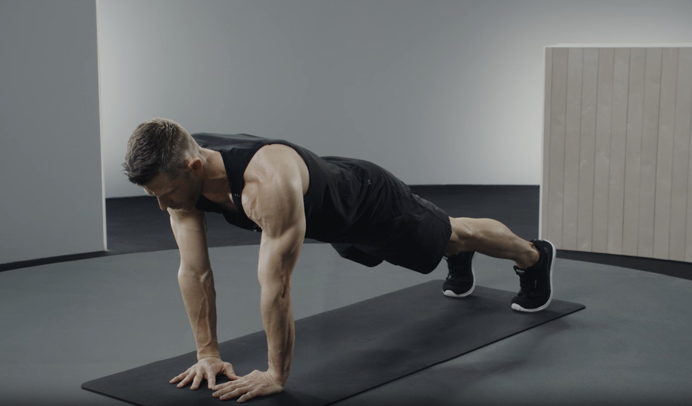
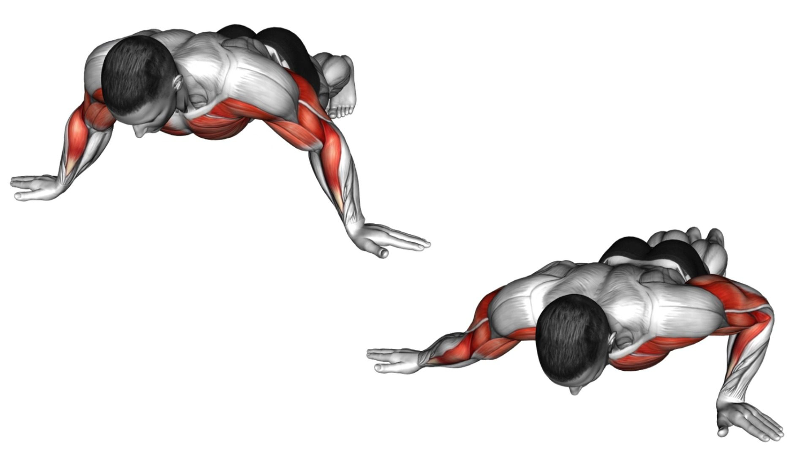

Şınav, vücut ağırlığıyla yapılan en temel ve etkili egzersizlerden biridir. Sadece birkaç metrelik bir alan ve vücut ağırlığınla, ekipmana ihtiyaç duymadan üst vücut kaslarını geliştirebilirsin.

Şınav, göğüs (pectoralis), öndelt (ön omuz) ve tricep kaslarını aynı anda çalıştırır. Düzenli uygulama, bu kas gruplarında görünür hacim ve güç artışı sağlar.
Hareket sırasında karın, bel ve kalça kasları sabit duruşu korumak için aktif kalır. Bu da core bölgesinin güçlenmesine ve omurga sağlığının iyileşmesine yardımcı olur.
Şınav, günlük hayattaki itme ve yerden kalkma gibi hareketlere doğrudan transfer olur. Böylece fonksiyonel kuvvetini artırır ve sakatlanma riskini düşürür.
Büyük kas gruplarını aynı anda çalıştırdığı için kalp atışını yükseltir ve kardiyovasküler sistemini destekler. Düzenli kuvvet egzersizleri, kalp-damar hastalıkları riskini azaltır.
Şınav için spor salonuna veya pahalı ekipmanlara ihtiyacın yok. Evde, parkta, hatta ofiste bile birkaç dakikada antrenmanını tamamlayabilirsin.
Diamond, decline, archer, clap gibi onlarca varyasyonla programını zorlaştırabilir, farklı kas gruplarını hedefleyebilirsin. Bu çeşitlilik motivasyonu yüksek tutar.
Şimdi şınav meydan okumana geri dön ve programı tamamlamaya devam et! 💪